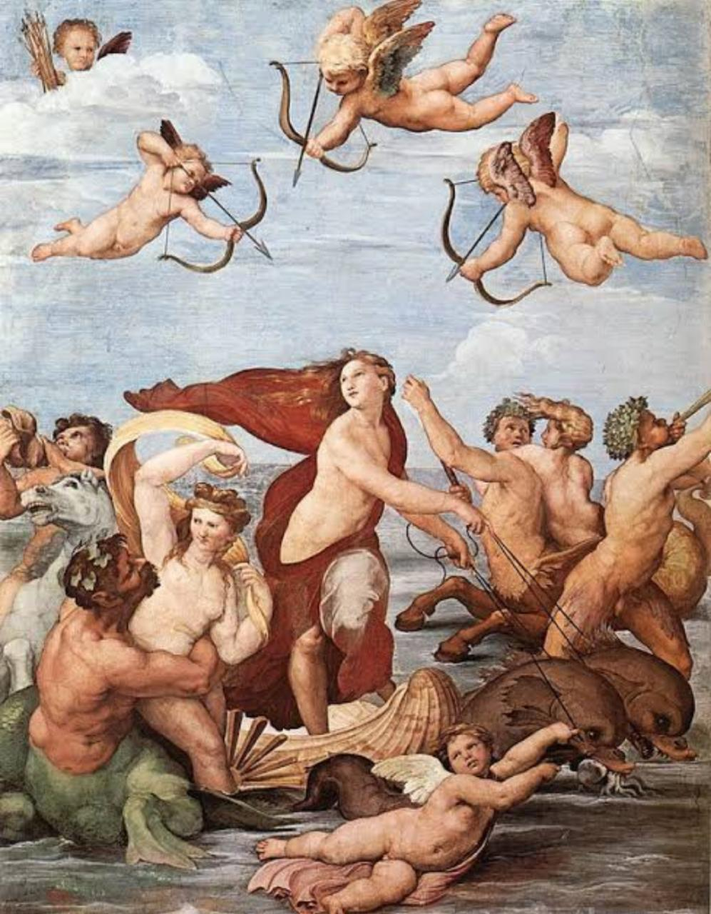

Renascimento, Renascença ou Renascentismo são os termos usados para identificar o período da história da Europa aproximadamente entre meados do século XIV e o fim do século XVI. Os estudiosos, contudo, não chegaram a um consenso sobre essa cronologia, havendo variações consideráveis nas datas conforme o autor. Apesar das transformações serem bem evidentes na cultura, sociedade, economia, política e religião, caracterizando a transição do feudalismo para o capitalismo e significando uma evolução em relação às estruturas medievais, o termo é mais comumente empregado para descrever seus efeitos nas artes, na filosofia e nas ciências.
Chamou-se Renascimento em virtude da intensa revalorização das referências da Antiguidade Clássica (greco-romana), que nortearam um progressivo abrandamento da influência do dogmatismo religioso e do misticismo sobre a cultura e a sociedade, com uma concomitante e crescente valorização da racionalidade, da ciência e da natureza. Neste processo o ser humano foi revestido de uma nova dignidade e colocado no centro da Criação, e por isso deu-se à principal corrente de pensamento deste período o nome de humanismo
O Renascimento como um marco importante na história da Europa, como uma fase de mudanças rápidas e relevantes em muitos domínios, como uma constelação de signos e símbolos culturais que definiu muito do que a Europa foi até a Revolução Francesa, e que permanece exercendo larga influência ainda nos dias de hoje, em muitas partes do mundo, tanto nos círculos acadêmicos como na cultura popular
A nova perspectiva do Classicismo promove uma transformação radical no modelo medieval. É hora de valorizar o esforço individual e as conquistas humanas, além de buscar a felicidade terrena. Os textos do Classicismo farão a propaganda de visão de mundo humanista, que passa a definir toda a produção estética do período.
As transformações promovidas pelo enriquecimento das cidades afetarão diretamente o contexto de produção da literatura do Classicismo. Os nobres medievais que compunham cantigas dão lugar , no Renascimento, a jovens artistas, filhos de pequenos comerciantes e patrocinados por mercadores ricos e poderosos, os mercenas, os quais buscavam, por meio do patrocínio à cultura, sua aceitação pela nobreza.
A circulação das obras literárias continua sob o impacto da invenção da prensa móvel. A maior facilidade de impressão faz com que mais cópias de uma mesma obra sejam produzidas, barateando o custo dos livros e tornando-os acessíveis a um maior número de pessoas. As universidades tornam-se os grandes centros públicos de leitura e discussão. Os mercenas encomendam cópias dos textos de filósofos e portas para montar bibliotecas particulares.
A arte assumiu um papel político para os novos ricos italianos. Por meio dos artistas que financiavam os mercenas afirmavam a extensão de seu poder. A batalha de egos travada entre mercenas de cidades como Mântua,Ferrara e Veneza desencadeou uma verdadeira explosão artística na Europa do século XV. A Igreja, que havia perdido poder temporal, entrou na disputa pelos artistas mais famosos, como Rafael e Michelangelo.
O conceito de originalidade na criação literária é uma invenção moderna. Durante o Renascimento, os escritores investiam na recriação de temas clássicos e retomaram, em suas obras, o princípio da mimese. Aristóteles atribuía à literatura a função de reproduzir os comportamentos humanos, para que o ser humano pudesse aprender com a "imitação" (mimese) da realidade.
Para revelar o que está no universo, o artista do Classicismo adota a razão como parâmetro de observação e interpretação da realidade. O olhar racional desencadeia, na literatura, uma das características mais marcantes da poesia do período: a tentativa de explicar os sentimentos e as emoções humanas. O soneto, tipo de composição preferida dos clássicos, revela o desejo de adaptar a expressão lírica a uma forma que permite o desenvolvimento de um raciocínio completo.